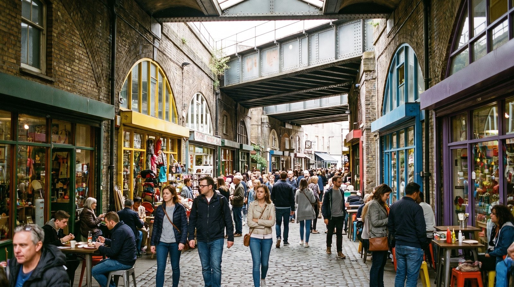
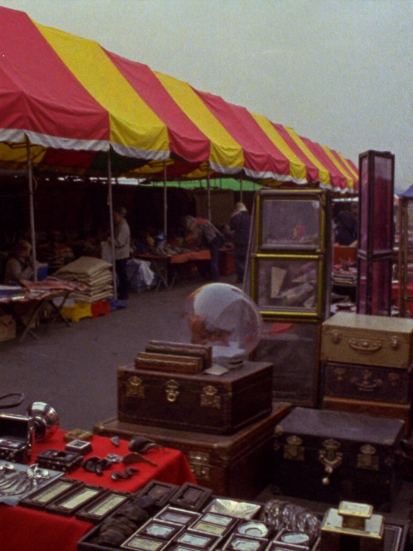
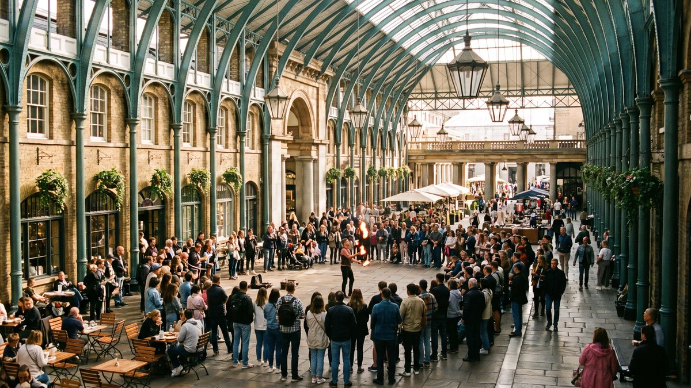
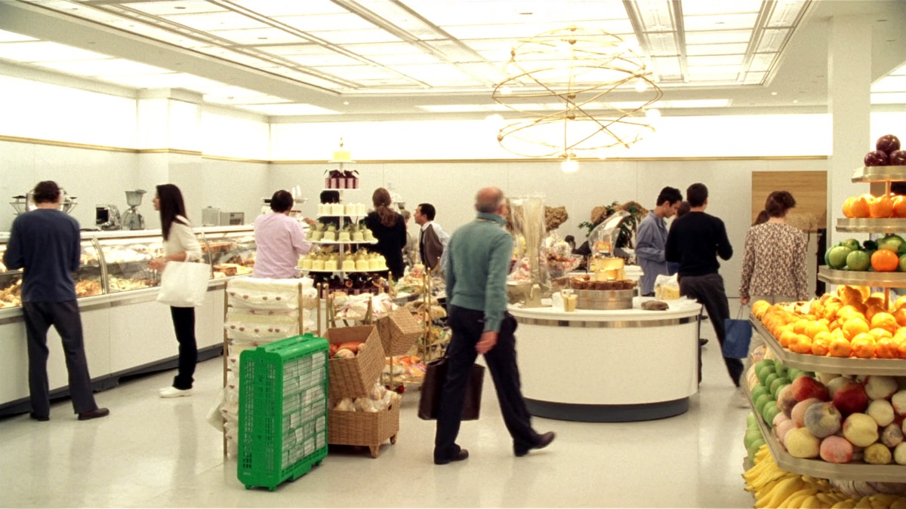

לונדון היא לא עיר אחת גדולה. היא אוסף של כפרים שגדלו זה לתוך זה עד שהפכו לרצף אחד, וכל אחד מהם שמר על האופי שלו. זו הסיבה שאפשר לעבור בעשר דקות ברכבת התחתית משכונה של בתי טרייס שקטים לרחוב שוק שמתפוצץ, ולהרגיש שהחלפתם עיר.
רוב המטיילים מתכננים את לונדון לפי אטרקציות. רשימה של מקומות, ואז ניסיון לחבר ביניהם. זה עובד, אבל זה גם מה שגורם לימים שבהם מבזבזים שעה וחצי בתחתית בין נקודה לנקודה. תכנון לפי אזורים עובד אחרת, ולרוב טוב יותר: בוחרים אזור, מכסים אותו ברגל, ואז עוברים.
הסדרה הזו נבנית אזור אחר אזור. כל מדריך מכסה את אותם דברים בדיוק, כדי שתוכלו להשוות בין אזורים ולא רק לקרוא עליהם: מה האופי של המקום, למי הוא מתאים ולמי פחות, מה באמת שווה לראות שם, איפה אוכלים, מסלול הליכה מוכן, ואיך מגיעים ומשלבים.
שמונת האזורים בסדרה
אמנות רחוב שמתחלפת, שלושה שווקים גדולים ואוכל רחוב שאין כמותו במרכז.
למדריך המלא
חמישה שווקים במתחם אחד, חמישה אולמות מוזיקה, ותעלה שמובילה עד ריג'נטס פארק.
למדריך המלא
בתים בצבעי פסטל, שוק העתיקות של פורטובלו והשכונה הכי מצולמת בעיר.
בקרוב בגו לונדוןלב הבילוי של לונדון. מועדוני ג'אז ותיקים, בארים קטנים ואוכל עד השעות הקטנות.
בקרוב בגו לונדון
אמני רחוב מתחת לכיפת השוק המקורה, תיאטראות והליכה שכולה רגל.
בקרוב בגו לונדוןקו האורך אפס, פארק ענק עם התצפית הטובה על העיר ושוק מקורה נעים.
בקרוב בגו לונדוןרחובות שקטים, בתים יפים וגינות. האזור שמראה איך נראים החיים כאן באמת.
בקרוב בגו לונדון
הרודס, חלונות ראווה, ושלושה מהמוזיאונים הגדולים בעיר במרחק הליכה.
בקרוב בגו לונדוןאנחנו עובדים על מדריך מפורט לכל אחד מהאזורים האלה: אוכל, מקומות מיוחדים, שווקים, מסלול הליכה, טיפים וכל מה שכדאי לדעת לפני שמגיעים. אנחנו מעדיפים להוציא מדריך אחד שבאמת שווה קריאה מאשר שמונה עמודים חצי גמורים, ולכן זה לוקח זמן. כל אזור שמסיים את הכתיבה עולה לכאן מיד.
איך בוחרים לאיזה אזור ללכת
אין תשובה אחת, אבל יש כמה כללי אצבע שחוסכים ימים מבוזבזים.
- אזור אחד ליום, לכל היותר שניים. שלושה אזורים ביום אחד נשמעים יעילים על הנייר, ובפועל זה יום שרובו מעבר בין תחנות.
- שכנים, לא מנוגדים. אזורים שגובלים זה בזה מתחברים ברגל. שני אזורים בקצוות מנוגדים של העיר יעלו לכם בשעה נטו של נסיעה.
- בדקו איזה יום זה. חלק מהאזורים תלויים לגמרי בשווקים שלהם, ושוק סגור הופך רחוב מלא לרחוב ריק. זה נכון במיוחד לשורדיץ', לקמדן ולנוטינג היל.
- בוקר במקום אחד, אחר צהריים בשני. זו החלוקה שעובדת הכי טוב, ובלבד שהשניים בהליכה או בנסיעה קצרה זה מזה.
אזורים מול לינה, וזה לא אותו דבר
שווה להפריד בין שתי שאלות שנשמעות דומות. השאלה איפה לישון נוגעת למחיר, לרעש, לקרבה לתחנה ולנוחות בסוף יום. השאלה לאן ללכת נוגעת למה יש שם בשעות שאתם ערים.
לפעמים התשובה זהה, ולפעמים ממש לא. יש אזורים מצוינים לביקור שהם בינוניים ללינה, ולהפך. הסדרה הזו עונה על השאלה השנייה. את הראשונה מכסה מדריך הלינה שלנו, שמפרק את העיר לפי אזורי מגורים.
איך משלבים אזור ביום אחד
הדרך הפשוטה ביותר היא לבנות את היום סביב עוגן אחד. בוחרים אזור, מקדישים לו בוקר, ומוסיפים לו אחר צהריים במשהו שנמצא בהליכה או בנסיעה של רבע שעה. כך היום מרגיש רגוע ובכל זאת מלא.